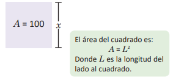
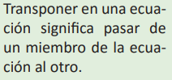

Ecuación cuadrática
En matemática, el uso de símbolos no solamente se da en notaciones para números; el primer paso hacia el razonamiento simbólico se dio en el contexto de la solución de problemas. En la antigua Babilonia lo que se hacía era presentar información sobre una cantidad desconocida y luego se presentaba su valor; un ejemplo de esto se da en la Tablilla BM 13901, que data del siglo XVIII: “He sumado siete veces el lado de mi cuadrado y once veces el área, obteniendo 61 4” esto se le denominó “el método de falsa posición” que resulta ser el proceso de solución de la siguiente ecuación ax2 + bx + c = 0, c < 0.
A pesar de que las soluciones de una ecuación cuadrática fueron conocidas por algunos matemáticos hindúes y árabes de forma verbal y a través de construcciones geométricas, fue por el matemático hindú Bhaskara nacido en el 1114 d. C., que se conoció la solución de este tipo de ecuaciones utilizando el álgebra simbólica.
Con estos contenidos pretendemos que veas la importancia de resolver ecuaciones cuadráticas utilizando factorización y la fórmula cuadrática usando recursos geométricos. Además estudiarás si hay soluciones en una ecuación cuadrática y se plantearán ecuaciones cuadráticas para resolver problemas de aplicación.

Tablilla BM 13901 es uno de los textos matemáticos más antiguos se encuentra en el Museo Británico de Londres, Inglaterra, comprende 24 problemas y sus soluciones.
Don Antonio tiene un terreno cuadrado para cultivar frijol, ¿cómo se puede determinar la medida de los lados del terreno si este tiene un área de 100m²?
Haciendo un esquema de la situación: Utilizando x para simbolizar la longitud del lado. El área del terreno es de 100m², entonces se puede plantear la ecuación: x2 = 100 Para determinar la medida de los lados del terreno hay que resolver esta ecuación

La ecuación planteada en el problema es x2 = 100, si se transpone el 100, también se puede expresar como x2 – 100 = 0, en la cual la incógnita está elevada al cuadrado. Este tipo de ecuaciones son llamadas ecuaciones cuadráticas. En general, se define ecuación cuadrática como las ecuaciones de la forma ax2 + bx + c = 0; con a, b, c números reales y a ≠ 0. Por ejemplo: 2x2 – 3 = 0, 9x2 – 3 = 0 , (x + 5)2 – 16 = 0, x2 + 4x + 1 = 0, x2 + 4x = 0, etc.
